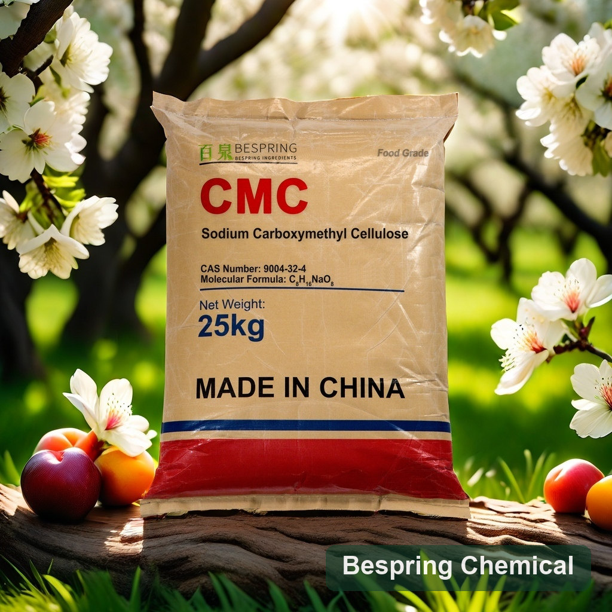
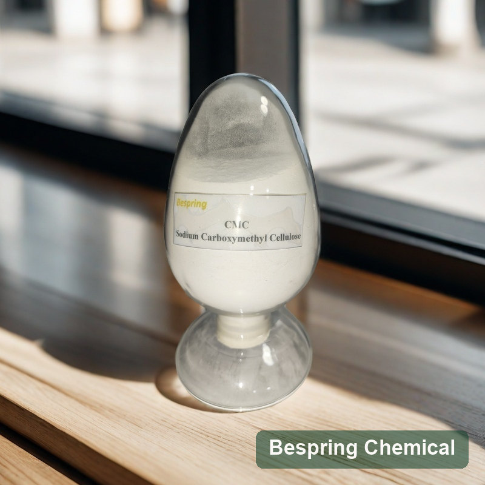
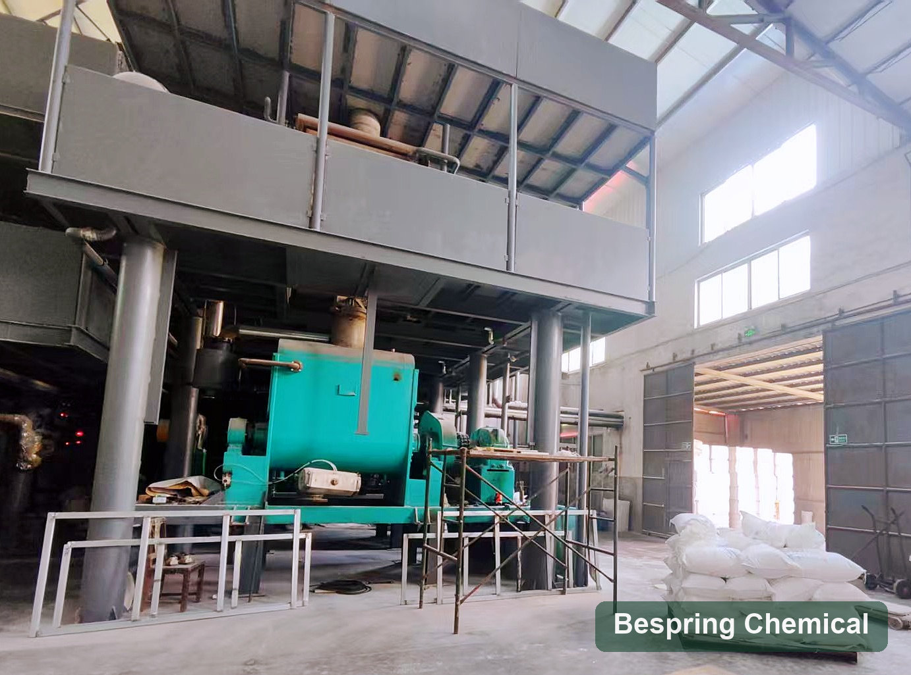
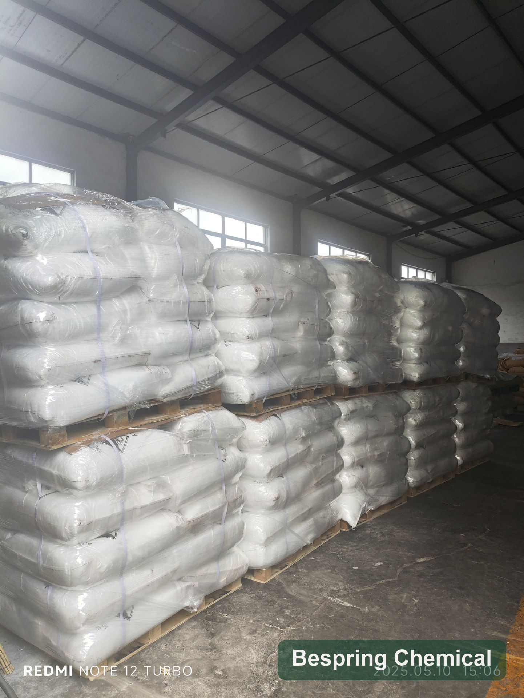
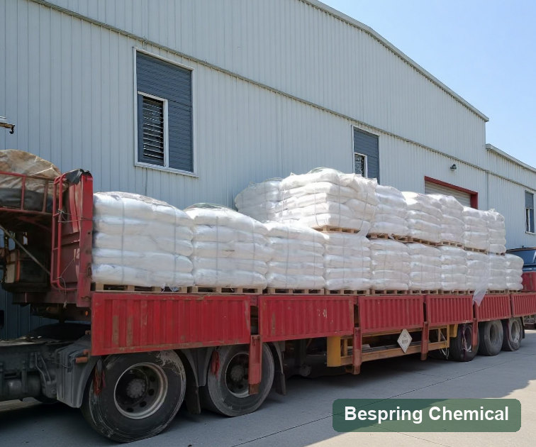

Control de viscosidad
Mida con concentración, temperatura y equipo definidos.
Ingrediente alimentario · Evaluación técnica B2B
Elija la CMC por viscosidad, grado de sustitución y método de medida, no solo por su denominación comercial.

Imagen del producto · confirme grado y embalaje al comprar
Indique aplicación, cantidad, destino y documentos requeridos para evaluar una oferta concreta.
ViscosidadElegir por textura y flujo
EspecificaciónRevisar requisitos del cliente
DocumentosPedir especificación y COA
ExportaciónCoordinar envase y destino
Identidad del producto
La carboximetilcelulosa sódica E466 es un hidrocoloide. Distintos grados pueden presentar viscosidades y perfiles de hidratación muy diferentes.
El grado, los métodos y el COA del lote se confirman para la oferta aprobada.
Función tecnológica
Puede aumentar viscosidad y ayudar a estabilizar partículas o textura. El resultado depende de concentración, pH, sales, hidratación y cizalla.
Mida con concentración, temperatura y equipo definidos.
Observe sedimentación y textura durante almacenamiento.
Aplicaciones
Se evalúa en bebidas, salsas, lácteos, panificación y otras matrices autorizadas. Pruebe la interacción con los demás ingredientes.
Ajuste sabor, pH y disolución en la fórmula final.
Compare cuerpo y estabilidad frente a ciclos de temperatura.
Compruebe compatibilidad con proteínas, sales y pH.
Evalúe viscosidad, fluidez y estabilidad en el envase.
Ajuste retención de agua y textura al proceso.
Mida hidratación y comportamiento durante preparación.
Grado a medida
Defina concentración, temperatura, equipo, velocidad y preparación de la solución; acuerde grado de sustitución y granulometría.
Acuerde viscosidad, sustitución, granulometría y método.
Datos de referencia
La tabla resume criterios JECFA y preguntas de compra. La viscosidad comercial requiere un método completo por grado.
Deslice o use el teclado para leer todas las columnas
| Parámetro | Referencia JECFA | Nota de compra |
|---|---|---|
| Descripción | Gránulos, polvo o fibras finas higroscópicos, blancos o ligeramente amarillentos y casi inodoros | Acuerde aspecto y perfil granulométrico |
| Ensayo | No menos de 99,5 % en base seca | No equivale a la pureza de un grado para detergentes |
| Pérdida por secado | No más de 12 % | 105 °C hasta peso constante |
| pH | 6,0–8,5 | Solución 1 en 100 |
| Sodio | No más de 12,4 % en base seca | Confirme el método analítico |
| Cloruro de sodio | No más de 0,5 % en base seca | Control de impurezas |
| Glicolato libre | No más de 0,4 % como glicolato de sodio, en base seca | Control de impurezas |
| Grado de sustitución | 0,20–1,50 | Pueden revisarse intervalos más estrechos |
| Plomo | No más de 2 mg/kg | Las normas del destino pueden añadir requisitos |
| Viscosidad | Se define por el grado comercial | Indique siempre el método completo |
Rendimiento en proceso
Controle la dispersión, el tiempo de hidratación y el orden de adición. Compare lotes con un método constante.
Apoyo de suministro
La selección parte de una especificación verificable y de la documentación vigente del grado ofrecido.
Seleccione y compare lotes con criterios verificables.
Solicite el COA y el alcance de los certificados vigentes.
Confirme envase, destino y documentos antes del envío.
Alinee varios ingredientes sin perder la trazabilidad por producto.
Fotografías de referencia
Las fotografías muestran muestra, equipo, inventario y expedición. Confirme identidad, planta y lote mediante documentos actuales.




Hidrocoloides relacionados
Compare CMC con otras gomas por función, viscosidad y compatibilidad en la receta, no solo por precio por kilogramo.
Consultas del comprador
Una cifra de viscosidad sin método de ensayo no permite comparar grados con rigor.
Es un hidrocoloide E466 empleado para modificar viscosidad y estabilidad en formulaciones autorizadas.
La oferta depende del método de ensayo y la aplicación; solicite la gama vigente.
Puede revisarse un grado que cumpla el método y los límites pactados, sujeto a disponibilidad.
Indique concentración, temperatura, equipo, velocidad, preparación y tiempo de hidratación.
Verifique el número en la especificación del grado exacto; no confunda la sal sódica con otras formas.
No. Requieren límites y documentación de homologación distintos.
Compare viscosidad, hidratación, pH, sales, textura y estabilidad en su fórmula.
Consulte disponibilidad e indique aplicación y método de comparación.
Grado, método de viscosidad, cantidad, envase, destino y documentos.
Consulta de suministro
Indique la aplicación, el grado, la cantidad, el país de destino y los documentos que necesita. Confirmaremos una oferta concreta.
Indique el grado y el mercado de destino para confirmar qué documentos están disponibles para su pedido.
Una referencia externa no es un certificado de lote ni una especificación de Bespring.